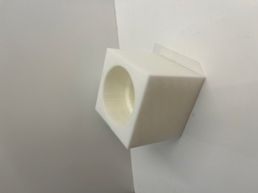
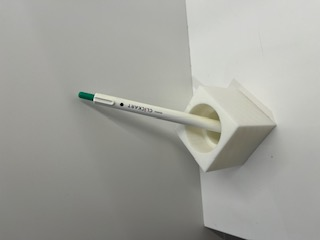
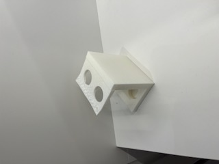
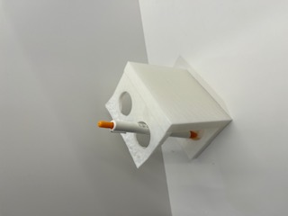
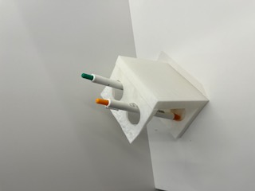

<!DOCTYPE html>
<html lang="jp">
    <head><body style="background-color: rgb(137, 217, 239);"><p style="color: rgb(50, 127, 158);"></p></body>
        <meta charset="UTF-8">
<head>
    <meta charset="UTF-8">
    <title>デジタルファブリケーション</title>
    <link rel="stylesheet" href="./css/style.css">
    <link rel="shortcut icon" href="./images/xbp.ico">
</head>
<body>
   
   
    <H1>最終課題</H1><br>

    私は3Dプリンターを使って一人暮らしであったら便利なものを二つ作りました。<br>
<br>
<br>
一つ目（ペン立て）<br>
<br>

二つ目（歯ブラシ立て）<br>
<br>
  
<a href="https://youtube.com/shorts/_BaIBob9DX8" target="_blank">YouTube</a></div><br>
<a href="https://youtube.com/shorts/JIhwi8Q-XjQ" target="_blank">YouTube</a></div><br>


</body>
</html>
